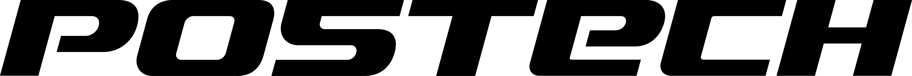
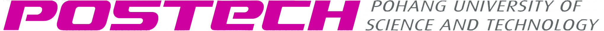

순서대로 따라오세요. 답을 고르면 나에게 맞는 행사로 이어집니다. 여러 개가 해당돼도 좋습니다 — 하나만 골라도, 함께 참여해도 됩니다.

인사팀 · AIR센터 | 나에게 맞는 AI 행사 선택 가이드투입 시간·숙련도·목표를 기준으로 세 행사를 내 상황에 맞게 비교해보세요.
| 기준 | ①Working Group (`26 하반기) |
②고급교육 | ③공모전 |
|---|---|---|---|
| 한 줄 소개 | 실무 공동 구현 내 업무 문제를 함께 해결 | 집중 양성 과정 1인 1과제 완주형 | 자유 출품 챌린지 AX 사례·산출물 제출 |
| 참여 및 선발 형태 | 개인 또는 업무단위 그룹(4명 이하) — 팀별 추천 또는 지원 후 선발 과정 있음 | 집합 교육(8명 이내) — 수요에 따라 선발 과정이 발생할 수 있음 | 개인 또는 팀(4명 이하) — 제한 없음 |
| 필요 시간 | 높음 · 주 1회·1시간+ 미팅 + 개인 실습 (연말까지) | 중간 · 3일 집중(일 5시간) + 현장 적용 | 낮음~자유 · 내 페이스로 준비해 제출 |
| 권장 AI 경험수준 | 중급 이상 (AI를 업무에 매일 사용) | 중급 이상 (AI를 업무에 매일 사용) | 제한 없음 |
| 목표·보상 | 실적용 가능한 업무 솔루션 AI 역량 강화 | 수료 + AX Leader 인증 | 수상(태블릿·해외벤치마킹·포상휴가·상품권 등) |
| 일정 | 7월부터 연말까지 상시 | 차수별 3일(집합교육) + 현장적용 작업 상시 | 10월 14일까지 접수 |
| AIR센터 지원 | Claude Pro 라이센스 + 멘토링 | 좌동 | 좌동 (단, 수요에 따라 지원을 위한 선발 과정이 발생할 수 있음) |
| 이런 분께 | 장기적으로 꾸준히 참여하며 AX로 업무를 바꾸고 싶은 분 | 제대로 배워 인증받고 현업으로도 연계하고 싶은 분 | 자유롭게 도전하며 성과를 인정받고 싶은 분 |
다음을 해볼 수 있어요: "1a로 진행해줘" · "1b의 비교표를 1a 진단 아래에 같이 넣어줘" · "결과 카드에 색을 조금 다르게 써줘"

2026 하반기 · 인사팀 · AIR센터Working Group은 AX(AI 전환) 교육·실습을 목적으로 구성되어, 그동안 vibe coding 환경 설정과 간단한 코드 실습을 함께 경험해 왔습니다. 하반기에는 개인 실습 중심에서 벗어나, 업무상 실제 문제를 정의하고 이를 해결해 업무에 적용하는 것을 목표로 소규모·고밀도로 운영합니다.
꾸준히 시간을 내어 내 업무를 AI로 실제 바꾸고 싶은 분, 혼자보다 AIR센터와 밀착해 함께 배우며 지속적으로 성장하고 싶은 분.
기초부터 체계적으로 배우고 싶은 분, 3일 집중 참여가 가능하고 수료·인증이라는 분명한 목표를 원하는 행정직원.
이미 AI로 만든 결과물이 있거나, 정해진 커리큘럼 없이 자유롭게 도전해 성과를 인정받고 수상까지 노리고 싶은 분. 개인·팀 모두 참여할 수 있습니다.
나에게 맞는 행사를 정했다면, 아래 방법으로 신청하세요. 행사별로 신청 경로가 다릅니다.